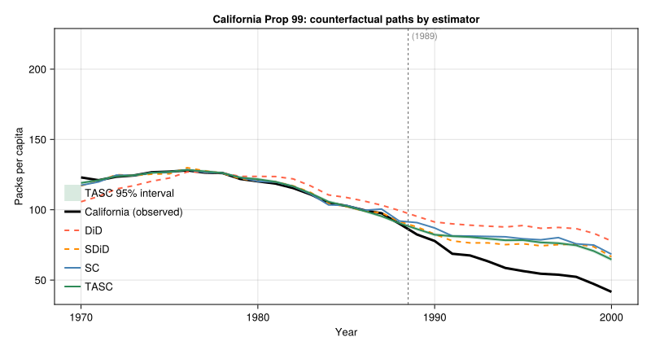

using CSV, DataFrames, Statistics
using SynthDiD
using TASC
df = CSV.read("california_prop99.csv", DataFrame)
# ... pivot to N×T matrix Y, N0 = 38 donors, T0 = 19 pre-treatment years
# (full setup code below)
tau_did = did_estimate(Y, N0, T0)
tau_sdid = synthdid_estimate(Y, N0, T0)
tau_sc = sc_estimate(Y, N0, T0)
# TASC: treated unit must be row 1
Y_tasc = vcat(Y[(N0+1):end, :], Y[1:N0, :])
model = fit_tasc(Y_tasc; d=2, T0=T0, n_em=200, tol=1e-3)
pred = predict_counterfactual(model, Y_tasc)19 Same Data, Different Estimators: A Synthetic Control Comparison
19.1 One panel, four estimators
Here I use the Proposition 99 data to compare four panel estimators on the same outcome matrix: DiD, synthetic DiD, synthetic control, and TASC.
This is the standard California smoking example. There are 39 states, annual cigarette sales per capita from 1970 to 2000, and California is treated after the 1988 anti-smoking law. The useful thing about this example is that the estimators do not give exactly the same answer.
19.2 Four estimators, one panel
| Estimator | ATT (packs per capita) |
|---|---|
| Difference-in-differences | −27.4 |
| Synthetic control | −19.6 |
| Synthetic DiD | −16.1 |
| TASC | −17.1 |
The smallest and largest estimates differ by about ten packs per capita. That is not a rounding issue. It comes from the way each estimator constructs the counterfactual.
19.3 What changes across estimators
DiD (-27.4) assigns equal weight to every control state and every pre-treatment year. California is compared to the average of all 38 donor states. In this data, that average sits well below California before treatment. So the large DiD estimate is not automatically evidence of a larger causal effect. It is partly a warning that equal weights do not fit the pre-period well.
Synthetic control (-19.6) replaces equal weights with donor weights chosen to match California’s 1970-1988 cigarette sales. Once the pre-period fit is better, the post-treatment gap shrinks. The move from about -27 to about -20 is mostly the price of using a better control group.
Synthetic DiD (-16.1) adds time weights. The estimator can put more weight on the pre-treatment years that are more useful for the post-1988 counterfactual. Here that moves the estimate a bit closer to zero.
TASC (-17.1) does something different. Instead of choosing only weights, it fits a state-space model to the pre-treatment panel:
\[ x_t = A\,x_{t-1} + q_t,\quad q_t \sim \mathcal{N}(0,Q) \]
\[ y_t = H\,x_t + r_t,\quad r_t \sim \mathcal{N}(0,R) \]
The matrix \(A\) describes how the latent factors move over time. After treatment, the filter continues using the donor panel, and the treated unit’s row of \(H\) maps the latent state to California’s counterfactual. The TASC estimate (-17.1) lands between SC and SDiD in this example.
19.4 The figure
# Counterfactual path for each method
cfact_did = omega_did' * Y[1:N0, :] .+ intercept_did # parallel trends
cfact_sdid = omega_sdid' * Y[1:N0, :] .+ intercept_sdid
cfact_sc = omega_sc' * Y[1:N0, :] # no intercept
cfact_tasc = vec(pred.target)
tasc_se = sqrt.(max.(vec(pred.variance), 0.0))
Two things are visible in the figure that the table cannot show.
First, the pre-treatment paths differ. The DiD control average sits well below California before treatment. SC and TASC track California more closely. This is why the DiD post-treatment gap is larger.
Second, the TASC band is narrow before treatment and wider after 1989. That is what I would expect. Before treatment, the smoother can use information from both directions in time. After treatment, the filter has to move forward without California’s observed outcomes, so the uncertainty accumulates through \(P_{t+1} = AP_tA^\top + Q\).
19.5 What the comparison teaches
| Comparison | What it isolates |
|---|---|
| DiD vs SC | Unit weights — equal vs optimised donor match |
| SC vs SDiD | Time weights — equal vs recency-weighted pre-period |
| SC vs TASC | Model — weight fitting vs latent state-space |
| SC/SDiD vs TASC | Uncertainty — point estimate vs posterior interval |
Which estimator I would use depends on the setting. DiD is transparent, but the pre-period fit here is poor. SC improves the donor match. SDiD also weights time periods. TASC is useful when the outcome series has persistent dynamics and we want uncertainty for the counterfactual path, not just one average number.
For this panel, the three methods that try to match the pre-period give estimates between about -16 and -20. DiD is the outlier. I would read this as a problem with equal weights, not as evidence that the effect of Proposition 99 depends on the estimator.
19.6 Setup code
df = CSV.read("california_prop99.csv", DataFrame)
states = sort(unique(df.State))
years = sort(unique(df.Year))
N, T = length(states), length(years)
Y_wide = zeros(N, T)
treated_vec = zeros(Bool, N)
for row in eachrow(df)
i = findfirst(==(row.State), states)
t = findfirst(==(row.Year), years)
Y_wide[i, t] = row.PacksPerCapita
treated_vec[i] |= (row.treated == 1)
end
ctrl_idx = findall(.!treated_vec)
trt_idx = findall(treated_vec)
Y = Y_wide[vcat(ctrl_idx, trt_idx), :] # donors first
N0 = length(ctrl_idx) # 38
T0 = findfirst(==(1989), years) - 1 # 19The SynthDiD.jl package provides did_estimate, synthdid_estimate, and sc_estimate. The TASC.jl package provides fit_tasc and predict_counterfactual. Both packages are available on GitHub.